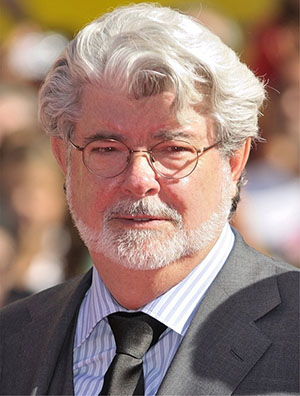

Star Wars is an American epic space opera[1] media franchise created by George Lucas, which began with the eponymous 1977 film and quickly became a worldwide pop-culture phenomenon. The franchise has been expanded into various films and other media, including television series, video games, novels, comic books, theme park attractions, and themed areas, comprising an all-encompassing fictional universe.[b] The franchise holds a Guinness World Records title for the "Most successful film merchandising franchise."[3] In 2020, the Star Wars franchise's total value was estimated at US$70 billion, and it is currently the fifth-highest-grossing media franchise of all time.
Contents
1 Premise
2 Film
2.1 Skywalker Saga
2.2 Anthology films
3 Television
3.1 Series
3.2 Films
3.3 Television Special
4 In other media
4.1 Video Games
4.2 Theme park attractions
5 Themes
5.1 Historical Influencese
6 Cultural Impact
6.1 Industry
See also
Notes
References
9.1 Citations
9.2 Sources
Further reading
External links
The original film, retroactively subtitled Episode IV: A New Hope (1977), was followed by the sequels Episode V: The Empire Strikes Back (1980) and
Episode VI: Return of the Jedi (1983), forming the original Star Wars trilogy. A prequel trilogy was later released, consisting of Episode I: The Phantom Menace (1999), Episode II: Attack of the Clones (2002), and Episode III: Revenge of the Sith (2005). In 2012, Lucas sold his production company to Disney, relinquishing his ownership of the franchise. The subsequently produced sequel trilogy consists of Episode VII: The Force Awakens (2015), Episode VIII: The Last Jedi (2017), and Episode IX: The Rise of Skywalker (2019). Together, the three trilogies form what has been referred to as the "Skywalker saga". All nine films were nominated for Academy Awards (with wins going to the first two released) and were commercially successful. Together with the theatrical spin-off films Rogue One (2016) and Solo: A Star Wars Story (2018), the combined box office revenue of the films equates to over US$10 billion,[4] and it is currently the second-highest-grossing film franchise.[5]
Premise
Iconic elements of the franchise.
The Star Wars franchise depicts the adventures of characters "A long time ago in a galaxy far, far away",[6] in which humans and many species of aliens (often humanoid) co-exist with robots, or 'droids', who may assist them in their daily routines; space travel between planets is common due to lightspeed hyperspace technology.[7][8][9] Spacecraft range from small starfighters, to huge capital ships such as the Star Destroyers, to space stations such as the moon-sized Death Stars. Telecommunication includes two-way audio and audiovisual screens, and holographic projections.
A mystical power known as the Force is described in the original film as "an energy field created by all living things ... [that] binds the galaxy together".[10] Through training and meditation, those whom "the Force is strong with" are able to perform various superpowers (such as telekinesis, precognition, telepathy, and manipulation of physical energy).[11] The Force is wielded by two major knighthood orders at conflict with each other: the Jedi, peacekeepers of the Galactic Republic who act on the light side of the Force through non-attachment and arbitration, and the Sith, who use the dark side by manipulating fear and aggression. While Jedi Knights can be numerous, the Dark Lords of the Sith (or 'Darths') are intended to be limited to two: a master and their apprentice.[12]
Force-wielders are very limited in numbers in comparison to the average population. The Jedi and Sith prefer the use of a weapon called a lightsaber, a blade of energy that can cut through virtually any surface and deflect energy bolts. The rest of the population, as well as renegades and soldiers, use laser-powered blaster firearms. In the outer reaches of the galaxy, crime syndicates such as the Hutt cartel are dominant. Bounty hunters are often employed by both gangsters and governments. Illicit activities include smuggling and slavery.
Fictional timeline
The Star Wars canon fictional universe spans multiple eras, including three focused around each of the film trilogies:[13]
The Age of Republic: The era of the prequel trilogy,[c] in which the democratic Galactic Republic is corrupted by its ruler, Palpatine—secretly the Sith lord Darth Sidious. After orchestrating the Clone Wars between the Republic and a Separatist confederation, Palpatine overthrows the Republic and establishes the totalitarian Galactic Empire.[15][16]
The Age of Rebellion: The era of the original trilogy,[d] in which the Empire is fought by the Rebel Alliance in a Galactic Civil War that spans several years, climaxing with the death of the Emperor[18] and eventually resulting in the fall of the Empire.[19]
The Age of Resistance: The era of the sequel trilogy,[e] in which the remnants of the Empire reform as the First Order.[21] Heroes of the former Rebellion, aided by the New Republic, lead the Resistance against the oppressive regime and its rulers, the mysterious being known as Snoke and his puppet master, the revived Palpatine.[22]
The Expanded Universe of spin-off media depicts different levels of continuity, which were deemed non-canonical and rebranded as 'Legends' on April 25, 2014, to make most subsequent works align to the episodic films and The Clone Wars film and television series.[2]
George Lucas

George Lucas made much of his fortune by retaining his rights to the franchise's merchandising.
Film
The Star Wars film series centers around three sets of trilogies, which are collectively referred to as the "Skywalker saga".[23] They were produced non-chronologically, with Episodes IV–VI (the original trilogy) being released between 1977 and 1983, Episodes I–III (the prequel trilogy) being released between 1999 and 2005, and Episodes VII–IX (the sequel trilogy), being released between 2015 and 2019. Each trilogy focuses on a generation of the Force-sensitive Skywalker family. The original trilogy depicts the heroic development of Luke Skywalker, the prequels tell the backstory of his father Anakin, while the sequels star Luke's nephew, Kylo Ren.
An anthology series set between the main episodes entered development in parallel to the production of the sequel trilogy,[24] described by Disney chief financial officer Jay Rasulo as origin stories.[25] The first entry, Rogue One (2016), tells the story of the rebels who steal the Death Star plans directly before Episode IV.[26][27] Solo: A Star Wars Story (2018) focuses on Han Solo's backstory, also featuring original trilogy co-protagonists Chewbacca and Lando Calrissian and involving prequel trilogy villain Darth Maul.
Lucasfilm has a number of Star Wars movies in development, including a trilogy which will be written by The Last Jedi writer/director Rian Johnson[28] and be independent from the Skywalker saga.[29] Additionally, a film based on the Knights of the Old Republic video games was reported to be in development with Laeta Kalogridis writing the script.[30] In September 2019, it was announced that Kennedy and Kevin Feige will collaborate to develop a Star Wars film.[31] In January 2020, a film set in the era of The High Republic was reported to be in development.[32] In February 2020, a film was announced to be in development from director J. D. Dillard and writer Matt Owens.[33] In May 2020, Lucasfilm announced that Taika Waititi had been hired to direct a Star Wars film from a script he is co-writing with Krysty Wilson-Cairns.[34In 1971, George Lucas wanted to film an adaptation of the Flash Gordon serial, but could not obtain the rights, so he began developing his own space opera.[35][f] After directing American Graffiti (1973), he wrote a two-page synopsis, which 20th Century Fox decided to invest in.[36][37][38] By 1974, he had expanded the story into the first draft of a screenplay.[39] The 1977 movie's success led Lucas to make it the basis of an elaborate film serial.[40] With the backstory he created for the sequel, Lucas decided that the series would be a trilogy of trilogies.[41] Most of the main cast would return for the two additional installments of the original trilogy, which were self-financed by Lucasfilm.
Star Wars was released on May 25, 1977, and first subtitled Episode IV: A New Hope in the 1979 book The Art of Star Wars.[42] Episode V: The Empire Strikes Back was released on May 21, 1980, also achieving wide financial and critical success. The final film in the trilogy, Episode VI: Return of the Jedi was released on May 25, 1983. The story of the original trilogy focuses on Luke Skywalker's quest to become a Jedi, his struggle with the evil Imperial agent Darth Vader, and the struggle of the Rebel Alliance to free the galaxy from the clutches of the Galactic Empire.
Television
The Star Wars franchise has been spun off to various television productions, including two animated series released in the mid-1980s. Further animated series began to be released in the 2000s, the first two of which focused on the Clone Wars. After Disney's acquisition of Lucasfilm, only the later one remained canon. Three live-action Star Wars series will be released on Disney+. The first, The Mandalorian, premiered on November 12, 2019. Star Wars won the 2020 Webby Award for Television & Film in the category Social.[69]